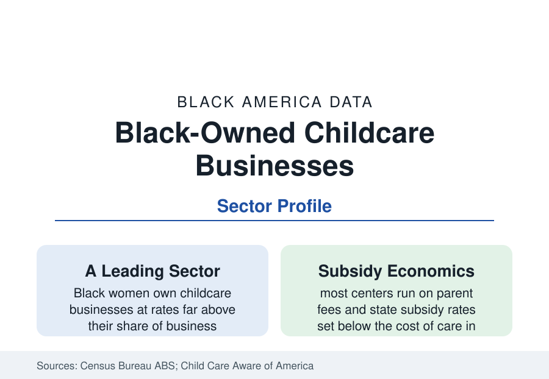

Black Business
Black-Owned Childcare: The Care Economy's First Business
Childcare is among the most Black- and women-owned sectors in the economy — and among its most financially fragile. The Census and industry data.

Before the schools of the education file, there is childcare — and its ownership is one of the most distinctive in the business data: the center-based and home-based childcare industry is disproportionately owned by Black women, staffed almost entirely by women, and financed on margins so thin that the federal analyses describe the sector's business model as structurally broken. It is also the infrastructure every other workforce in this reference stands on. This article reports the childcare business data.
The Sector's Shape: Centers, Homes, and the Ownership Data
The industry's structure splits by setting in the licensing data: center-based programs (from single-site independents to the national chains — KinderCare, Bright Horizons, Learning Care Group at the corporate tier) and licensed family childcare homes (one provider, her residence, a small group of children — the sector's most numerous form). The ownership data by setting diverge sharply: the chains are conventionally corporate; the independents and the homes are where the ABS and licensing records find Black women at ownership shares among the highest of any sector in this reference — the home-based tier especially, which is substantially an industry of Black and Latina sole proprietors. The nonemployer and micro-employer counts dominate (most childcare businesses employ fewer than twenty), the revenues track the Child Care Aware price data (infant care priced above public college tuition in most states' surveys — for parents) against provider wages at the workforce floor (the care profile's data: the people charging that tuition pay their staff, and themselves, near poverty wages — the sector's central paradox, fully documented: care is simultaneously unaffordable and unlivable because the labor IS the product and parents' wages cap the price).
The Subsidy System as the Business Model
For the businesses serving the communities of this reference, the customer is substantially the state: the Child Care and Development Fund's subsidies (paying providers on behalf of low-income working families) set the effective price in the low-income market, and the federal analyses find state reimbursement rates below the estimated cost of quality care in most states — the provider's arithmetic solved by larger groups, longer hours, the owner's own unpaid labor, and wages the workforce file records. The pandemic's stabilization grants (the ARP childcare funds that flowed to hundreds of thousands of providers, keeping the sector's doors open through 2023 in the Administration's data) and their expiration wrote the sector's most recent business chapter: the 'childcare cliff' of program closures and price increases in the post-funding surveys. The pre-K expansion file interacts directly: universal pre-K programs in the states and cities move the profitable four-year-olds into the school system, leaving centers the infant-toddler economics that lose money at any legal ratio — the industry's policy dilemma stated in one sentence of arithmetic.
The Workforce Economics of the Owner
The childcare owner is typically also its labor: the home provider working sixty-hour weeks as teacher, cook, janitor, and bookkeeper; the center director covering classrooms through the staffing shortages the workforce data chronicle (childcare employment recovered its pandemic losses more slowly than any sector in the BLS — the wages explain it). The business data add the capital file: childcare centers are real-estate businesses (the licensed space standard per child makes the building the balance sheet), zoning and licensing compliance is the regulatory moat and burden at once, and the financing profile applies with special force (a sector of women of color borrowing for facilities the banks' models undervalue — the CDFI childcare lending programs exist precisely on this file). The faith-based tier (church-run centers — the religion file's real estate and mission in business form) and the employer-sponsored and hospital-based centers complete the segmentation.
Quality, Ratings, and the Market Signal
The sector's quality infrastructure is now a business variable: the state QRIS rating systems (stars and levels tied to subsidy bonuses and parent information), accreditation (NAEYC's — held by a small minority of programs, its demographics skewing to the affluent market), the curriculum and assessment vendors, and the early-learning workforce credentials (the CDA and the degree requirements the Head Start model imposed) all price into the market's tiers. The data's equity file: the rated-quality supply in the majority-Black ZIP codes runs thinner in the state mapping studies (the 'childcare deserts' research counts licensed slots per child by geography — the deserts overlay the district maps of this reference), and the home-based tier — the community's own providers, rated lowest by systems designed for centers — argues its cultural and linguistic match in the family-choice research. The expansion models with data (the shared-services alliances pooling back offices for independents, the staffed family-childcare networks) are the sector's structural innovators.
Reading the Childcare Data
Childcare is the business where this reference's files converge at the smallest scale: a Black woman, a license, a house or a small center, six to sixty children, and a price that cannot cover the cost of the thing being sold — sustained anyway, because the alternative is every other mother's job. Its economics are impossible and its existence is general. The data do not describe a market failure so much as a society's subsidy, paid quietly by the providers themselves.
More in Black Business
Black-Owned Businesses: Counts, Receipts, and the Representation Gap
About 161,000 Black-owned employer firms and three million solo ventures: how the Census Bureau counts Black business ownership, where firms concentrate, and the gap between population share and business share.
Black Median Net Worth: The Wealth Gap in Federal Reserve Data
The Federal Reserve puts Black median family net worth at $44,900, against $285,000 for White families — about 16 cents on the dollar. The widest gap in economic data.
Black Buying Power: The $1.8 Trillion Consumer Economy
Black buying power is estimated at about $1.8 trillion — larger than the economy of most nations. What the figure measures, who produces it, and what it buys.
Source: U.S. Census Bureau, Annual Business Survey and Nonemployer Statistics (child day care sector); National Association for the Education of Young Children; Administration for Children and Families childcare data; Child Care Aware of America price surveys.